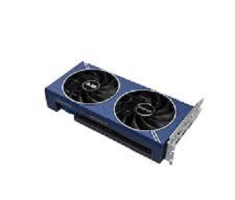
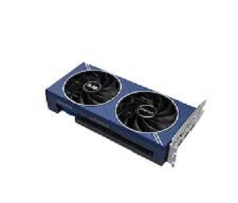

¿Que es una GPU?
Una placa de video, también conocida como tarjeta gráfica o GPU (Unidad de Procesamiento Gráfico), es un componente de hardware de una computadora cuya función principal es gestionar y mejorar la calidad de la imagen que se muestra en el monitor. Esta placa se encarga de procesar y ejecutar las instrucciones relacionadas con los gráficos y las imágenes.
Sus caracteristicas:
- Mejoran la reproducción de videos al descomprimir y decodificar archivos de video, lo que permite ver películas y videos de alta resolución sin problemas.
- Las GPUs modernas pueden realizar computación paralela, utilizada en aplicaciones como aprendizaje automático, simulaciones científicas y modelado 3D.
Sus conexiones:
- El pin PCI Express (en las mothers antiguas, solo PCI y AGP), es cual transfiere los datos que procesa la GPU al CPU.
- Los puertos de salida, como VGA, DPI, HDMI y DisplayPort. Estos son los canales de salida de video, que se conectan a nuestro monitor.
- El pin de fuente, que las placas de video actuales tienen. Son esos pines por donde pasa la corriente (que viene de la fuente poder) hacia nuestra GPU.
Ejemplos con imagenes
RTX 2060 Nvidia
RX 5600 XT AMD
ARC a580 Intel


Video de como colocarla (La cantidad de pines del cable, varía de la fuente y de lo que pida la tarjeta grafica)